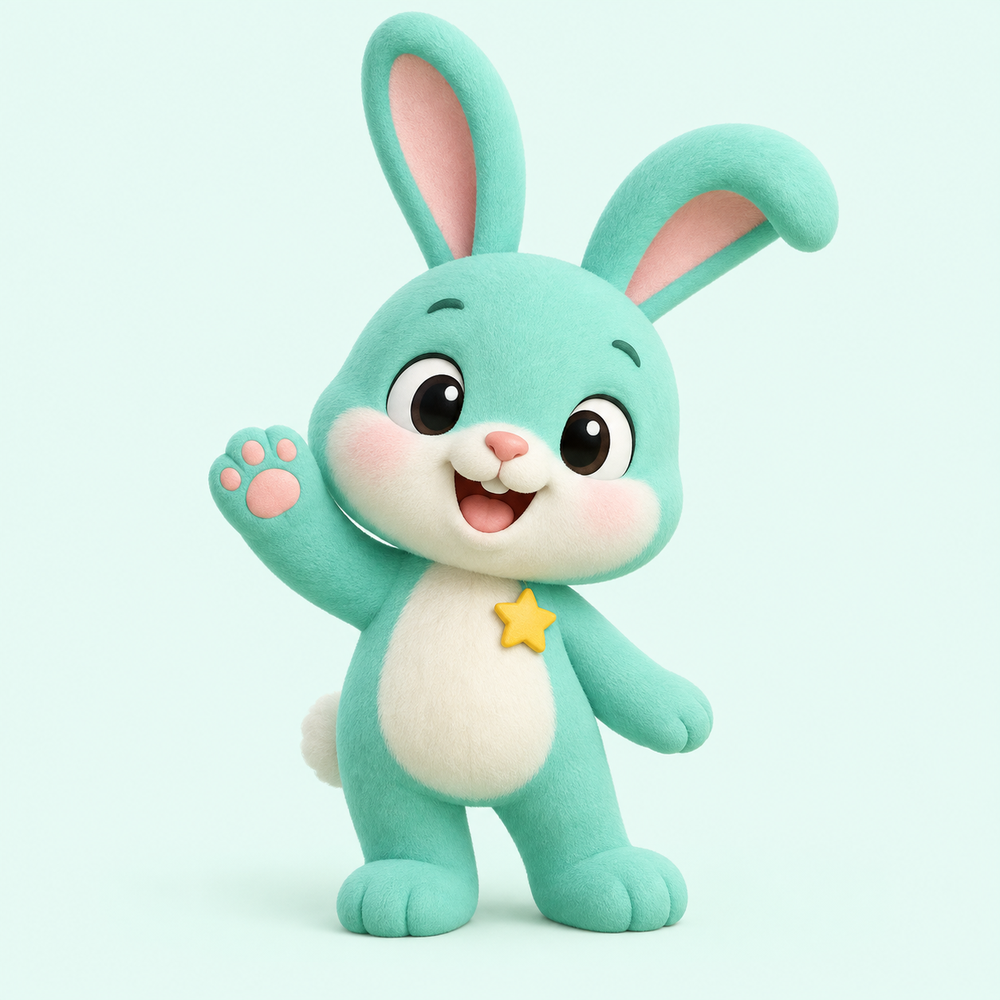

LET'S GROW · 每天進步一點點
個位數乘法
小腦袋，
準備發芽！
選好時間和題數，按下開始。
點數字、送出答案，一起練乘法！

每題想多久？
這次挑戰幾題？
2–9 隨機相乘，每題都不重複。
最後 3 秒會「叮、叮、叮」，右上角可關閉音效。
答錯也沒關係，每一題都是新的練習。
這題還有
點數字，填入你的答案
也可以用鍵盤：數字輸入 · Backspace 倒退 · Enter 送出
0分
LET'S GROW · 每天進步一點點
選好時間和題數，按下開始。
點數字、送出答案，一起練乘法！

2–9 隨機相乘，每題都不重複。
最後 3 秒會「叮、叮、叮」，右上角可關閉音效。
答錯也沒關係，每一題都是新的練習。
點數字，填入你的答案
也可以用鍵盤：數字輸入 · Backspace 倒退 · Enter 送出